Hue‑man Rights in Data Visualisation
How colour theory and colour-blind friendliness shade your data.
This post is the written version of a talk I give on colour in scientific figures. It has three parts: how we see colour (and how we don’t), how colourmaps can lie to us, and when it’s fine to break the rules. A disclaimer first: I am not a medical doctor, so I come at colour from the physics and perception side.
The buttons above show every figure in this post as it might look with protanopia or deuteranopia, where the long- or middle-wavelength cone system is absent, or in greyscale. The simulations are approximate and won’t match everyone’s experience, but they give you an idea of how your figures look to somebody else.
1. How we see colour
Our eyes have three types of cone cells, each sensitive to a different part of the visible spectrum. Long-wavelength (L) cones respond most strongly to yellow-green light, medium-wavelength (M) cones to green, and short-wavelength (S) cones to blue-violet. Their sensitivities overlap a lot, and the colour we see depends on how strongly each type responds compared with the others.
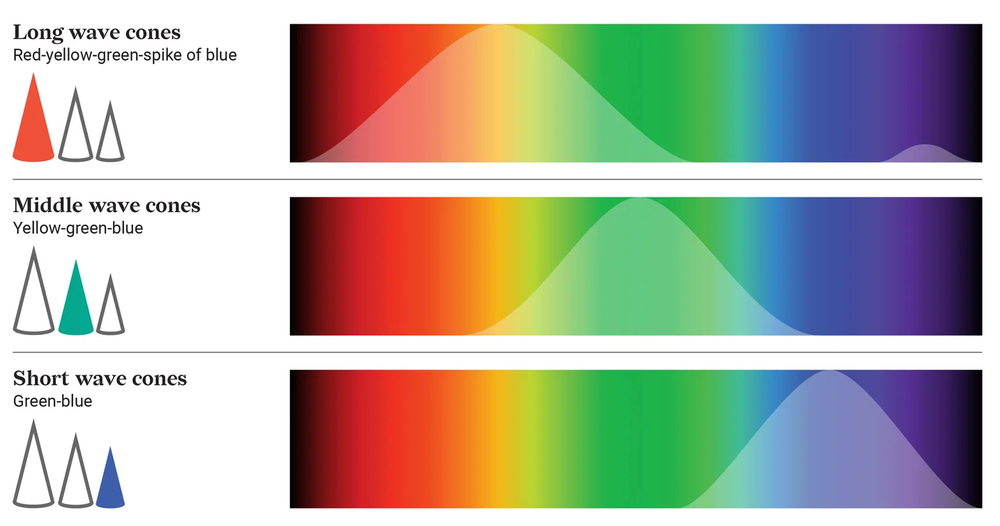
Your retina does colour maths
Because the cone sensitivities overlap, their three signals carry a lot of redundant information, so the visual system compares them before passing anything on. To a first approximation, the comparisons give three channels: brightness (L + M), red–green (L − M) and blue–yellow (S − (L + M)).
This opponent colour processing starts in the retina, before the signal reaches the brain. It explains why we can imagine a reddish yellow or a bluish green, but never a colour that is reddish and greenish at once, or yellowish and bluish (Hering 1878; Hurvich & Jameson 1957).
Colour isn’t universal
Even people with normal colour vision don’t all see or name colours the same way. In 2010, xkcd ran an online colour survey in which more than 200,000 participants were shown colours and asked to name them. The results are an entertaining reminder of how little we agree on what counts as blue, green or purple (and that humanity, apparently, can’t spell fuchsia).
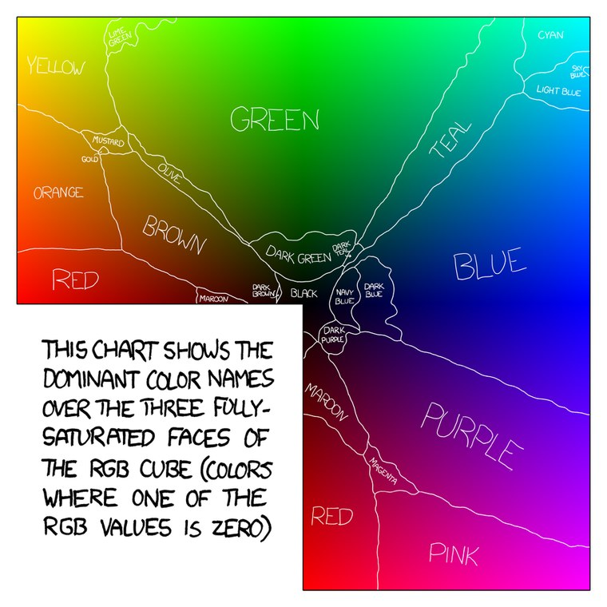
We aren’t equally good at telling all colours apart, either. In 1942, David MacAdam measured how far a colour can shift before an observer notices the difference. His results are usually drawn as ellipses on a chromaticity diagram, and the colours inside each ellipse are hard to tell apart. The ellipses differ in size and shape: on this diagram, some of the largest sit in the greens and some of the smallest in the blues. Equal distances on the diagram clearly don’t mean equal differences in what we see.
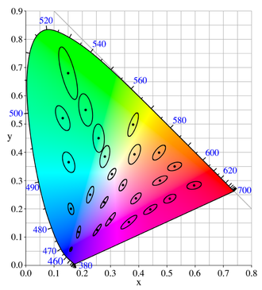
Colour-blindness in a nutshell
Now imagine that one of the three cone systems is missing or works differently. In protanopia the long-wavelength system is absent, and in deuteranopia the medium-wavelength one; both make some reds and greens hard to tell apart. In tritanopia the short-wavelength system is absent, and some blues and yellows become confused. There are also milder forms in which all three cone types are present, but one of them responds to a shifted part of the spectrum.
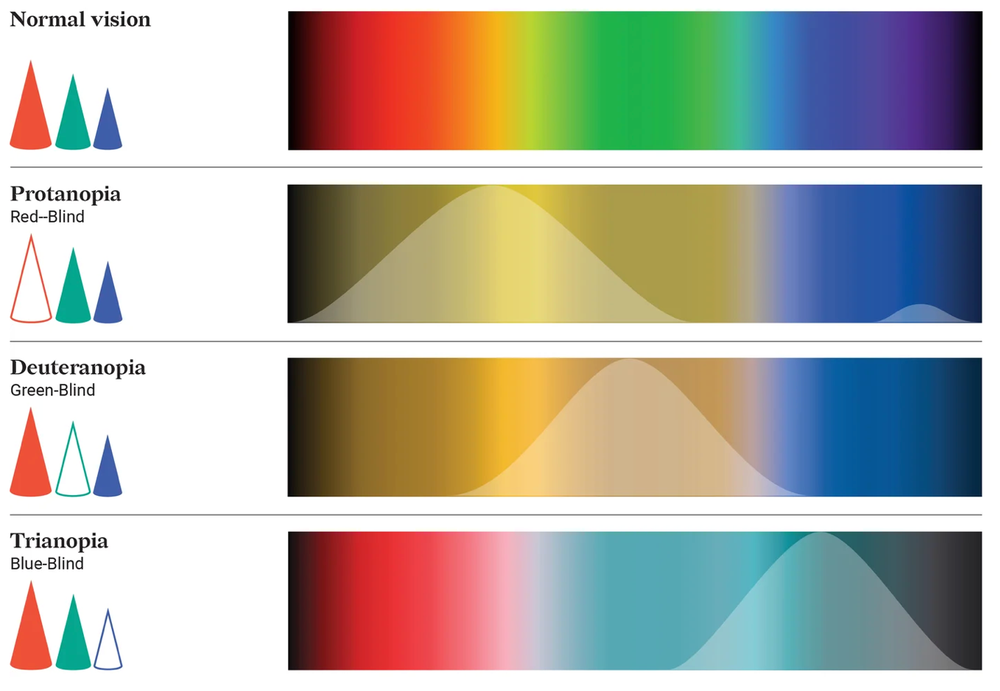
Why should we care?
Colour-vision deficiency is not rare. The commonly quoted estimates, for populations of Northern European ancestry, are about 8% of men and 0.5% of women. That is roughly 16 in every 200 men and one in every 200 women, and one of them might be your supervisor or the reviewer deciding whether your paper gets published.
If humans aren’t enough to convince you, consider the dogs. All 100 out of 100 have dichromatic colour vision, so they can’t tell reds from greens the way most humans can. They don’t see the world in black and white, though.
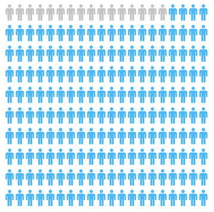
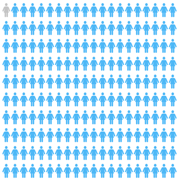
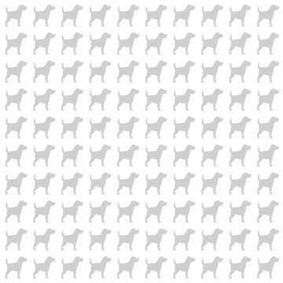
Use colour-blind-friendly palettes, and check them
Fortunately, this is easy to fix. There are plenty of colour-blind-friendly palettes; CMasher, for example, shows how each of its colourmaps looks under different colour-vision deficiencies. Before you submit a paper or give a talk, spend a minute running your figures through a simulator such as Coblis.
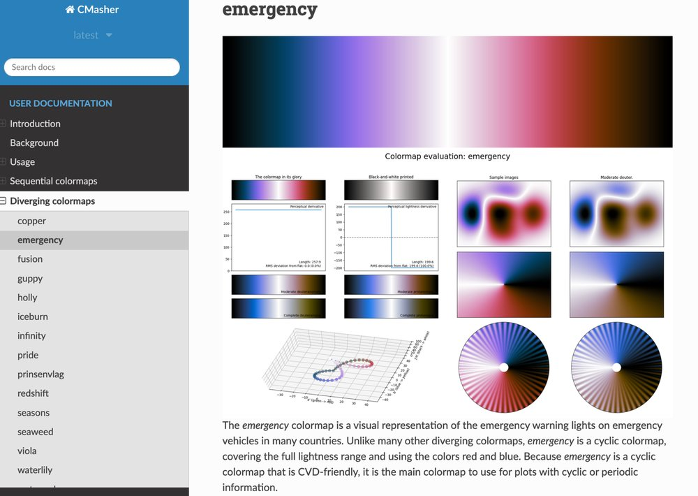
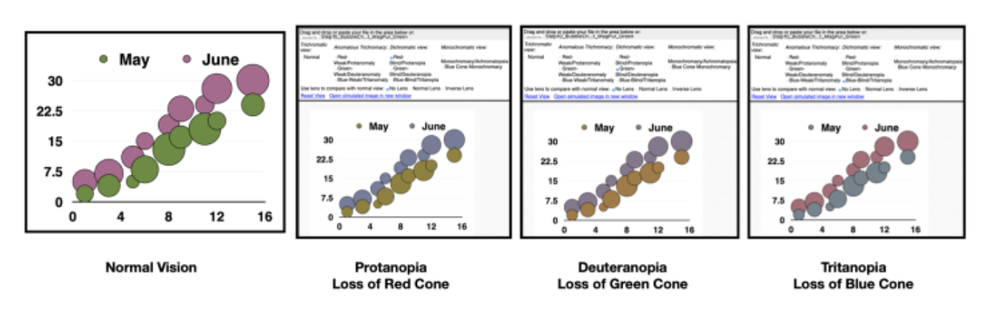
Take-home 1: We don’t all see colours the same way. Make your figures accessible.
And take-home 1.5: some mantis shrimp have 12 types of colour photoreceptor. Strangely, that doesn’t mean they are better at distinguishing colours than we are. Still, imagine if their scientific figures only worked for shrimps.
2. When colourmaps lie
Our eyes don’t work linearly
We don’t perceive brightness the way a light meter measures it. A change from one unit of light to two is far more noticeable than a change from 100 to 101, because what we notice is mostly the relative change. This is Weber’s law, and Fechner turned it into a roughly logarithmic relation between stimulus intensity and perception.
Real vision is more complicated than a single logarithm. Our eyes also adapt to the light around them, which lets us see across an enormous range of brightness. For colourmaps, the lesson is that equal steps in the numbers don’t automatically look like equal steps in brightness.
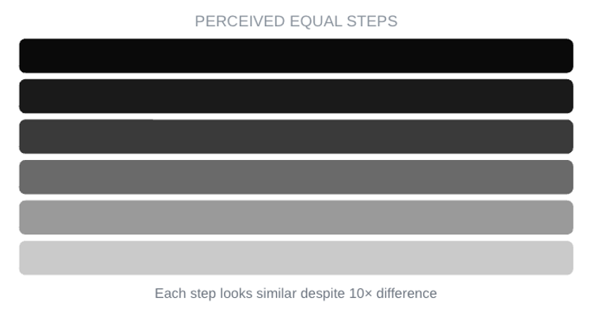
Perceptual uniformity
Ideally, a colourmap is perceptually uniform: if the data change by the same amount twice, the two changes in colour look equally large. The very popular jet colourmap is not. Print it in greyscale and the brightness rises and falls along the bar, where it should climb smoothly from dark to light. The bright stretches stand out from their neighbours and create bands and boundaries that may not exist in the data.
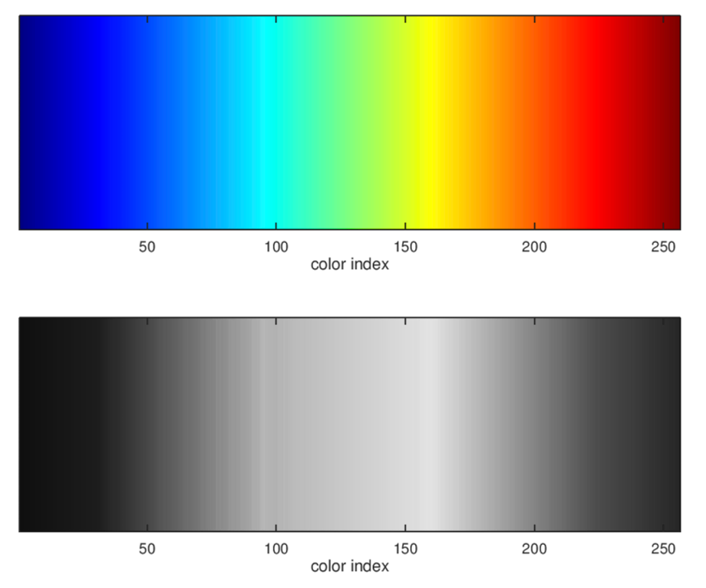
We can measure this by treating each colour as a point in a colour space and calculating the distance between neighbouring points along the colourmap. In a perceptually uniform colourmap, those distances are all about the same.
The colour space matters. RGB wasn’t designed to be perceptually uniform, so the distance between two RGB values says little about how different they look. CIELAB is a better approximation: it describes a colour by its lightness (L*) and two colour coordinates (a* and b*), and the distance between two colours is then
ΔE*ab = √[(ΔL*)² + (Δa*)² + (Δb*)²]
CIELAB isn’t perfectly uniform either, and more advanced spaces such as CAM02-UCS do better, but it is far more useful here than raw RGB distances.
The viscm tool shows these diagnostics for any colourmap. For jet, the perceptual derivative (the colour distance per step along the map) jumps up and down, the lightness rises and falls, and some colours merge under simulated red–green colour blindness.
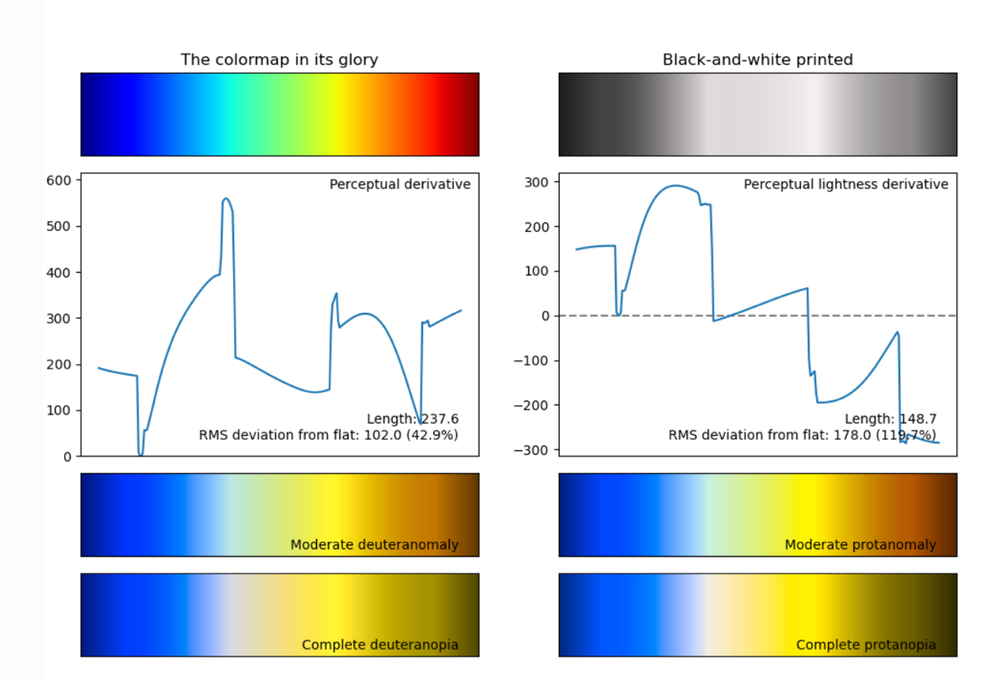
The face test
For a less technical demonstration, take a familiar photograph and show it in different colourmaps. In a roughly uniform colourmap, the shading and structure of the face stay recognisable. In jet, some features are exaggerated and others nearly disappear. It isn’t a rigorous test, but it’s a good way to convince someone that the choice of colourmap matters.
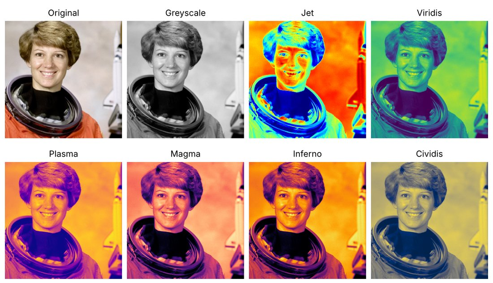
Colour qualifies, the legend quantifies
Colour is good at showing patterns and trends, but the actual numbers belong on the colourbar. Look at the rainfall map of Texas in the European Commission’s Data Visualisation Guide. Without the legend, you can’t tell which areas are wetter. Is purple wetter than yellow? What about green?
In a sequential colourmap, where the brightness changes steadily, the ordering is easy to see. You still need the colourbar to read off values, but you can tell at a glance which regions get more rain. And if the figure still makes sense printed in greyscale, that’s usually a good sign.
Normalise your data
Sometimes the problem lies in what you colour. Take the familiar county-level map of the 2016 US presidential election. Most of it looks red, because many counties covering large areas voted Republican. But land doesn’t vote; people do.
In his animation “Land doesn’t vote, people do”, Karim Douïeb turns each county into a circle sized by its number of votes, and the picture changes dramatically. The original map isn’t wrong: it shows which candidate won each county. If you want to show how people voted, though, the figure has to account for how many voters live in each place, and no colourmap can rescue a figure that shows the wrong quantity.
A case study: ozone
This is one of my favourite examples of how a colourmap can change the interpretation of real scientific data. The figure shows total column ozone over the Northern Hemisphere in a rainbow colourmap. Looking at it, you might pick out three places where the ozone changes sharply with latitude: a polar front, a mid-latitude front and a sub-polar front.
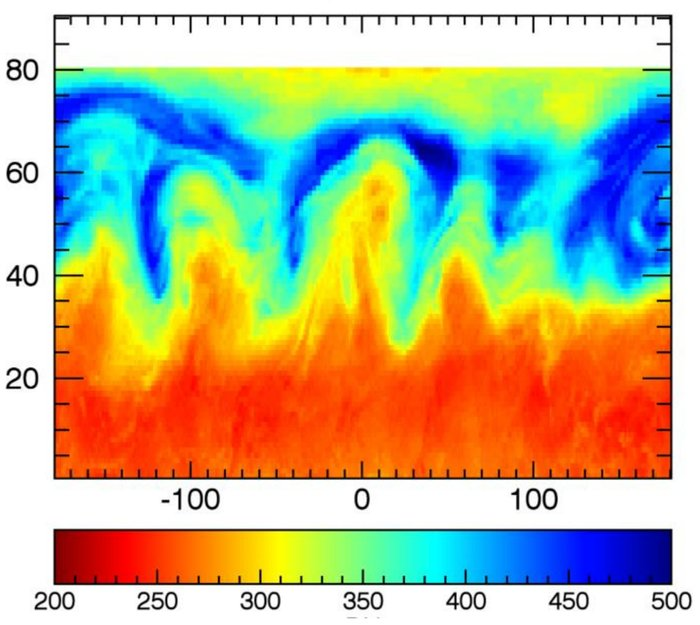
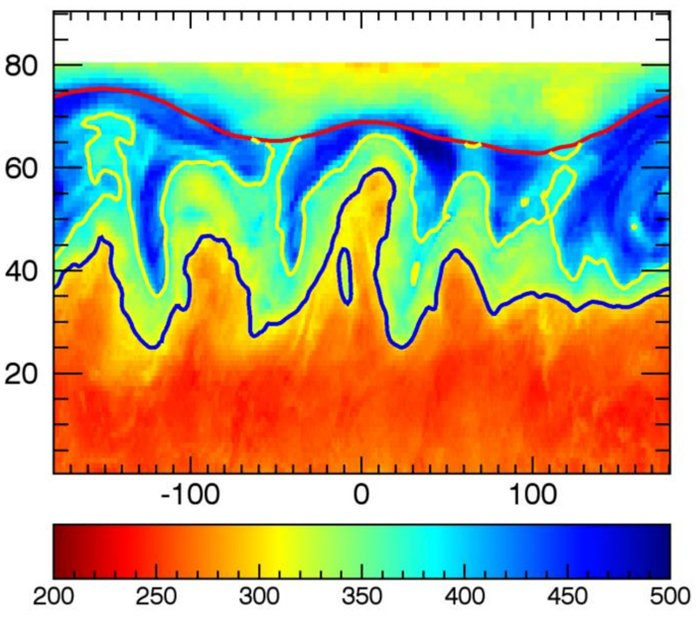
Now plot the same data in a more uniform colour scale, or better still, calculate the gradient of the ozone field to see where it actually changes fastest. The red and yellow fronts are still there. The blue front is much less convincing, so what looked like a sharp boundary was largely an artefact of the rainbow colourmap.
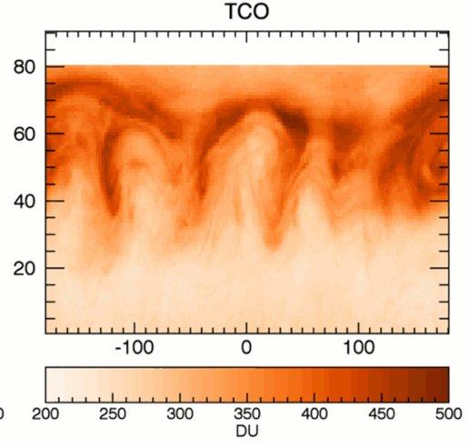
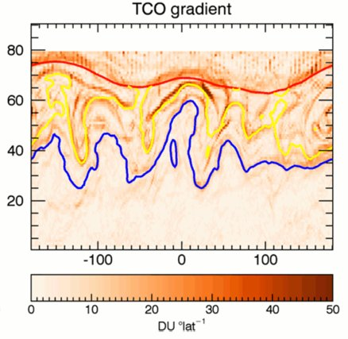
A non-uniform colourmap can give a narrow range of values a visually striking stretch of colour, and a gradual change then looks abrupt. A feature created by the colourmap can’t support a physical conclusion.
The solution
Matplotlib already includes four good alternatives: inferno, magma, plasma and viridis. They were designed to be close to perceptually uniform, with lightness that increases steadily, so they generally work in greyscale and stay readable for many viewers with colour-vision deficiencies.
They aren’t the only good choices. Diverging colourmaps suit data with a meaningful central value, and cyclic colourmaps suit angles or phases. Whichever you use, choose it for your data.
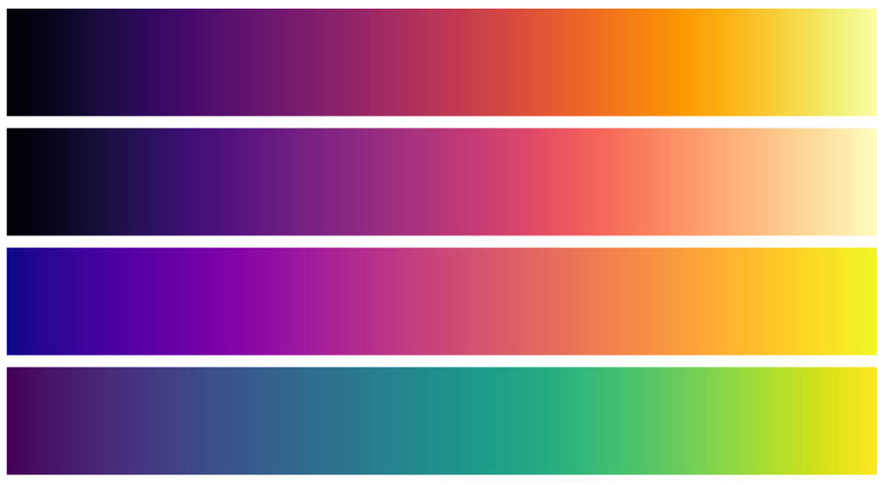
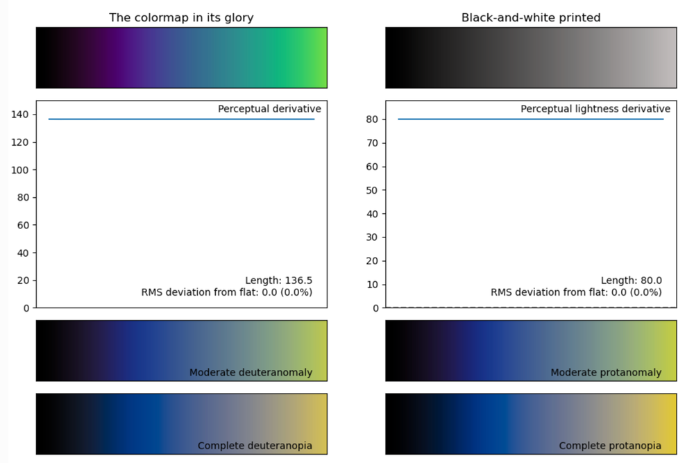
Take-home 2: Equal changes in data should look like equal changes in colour. Don’t let your colourmap invent features.
3. Breaking the rules
Every cloud has a silver lining
So, should we ban rainbow colourmaps altogether? Not necessarily. Their strong changes in hue and brightness can make small details easier to spot, even though those changes aren’t proportional to the data, and that helps when the aim is to explore a complex image.
Google’s Turbo colourmap was designed with this in mind. It keeps much of jet’s high contrast and reduces some of its more obvious problems, such as the artificial banding. Anton Mikhailov’s introduction to Turbo (2019) shows depth images in which the extra contrast helps to separate features. Turbo is still not perceptually uniform, and its lightness rises and then falls, so it can’t replace viridis everywhere. It does show that a figure can reasonably trade some quantitative accuracy for visual detail, depending on what the figure is for.
The upside of inaccurate maps
Sometimes you want a figure to reveal faint structure, or to help you notice something you might otherwise miss. High-contrast colourmaps are useful for this, including in some medical imaging; for an example from PET imaging, see Burgos et al. (2014).
Spotting a feature and measuring it are different jobs, though. A colourmap that helps you notice a faint feature isn’t necessarily the best one for judging its amplitude, so before you make a quantitative claim, check that the feature survives a more suitable colourmap.
A thought experiment
You have probably seen Ishihara colour-vision tests: plates of coloured dots with a number hidden inside, which people with different types of colour vision read as different numbers, or as no number at all. xkcd took the idea a little further in its Combination Vision Test.
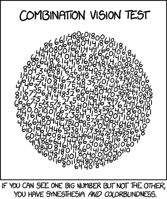
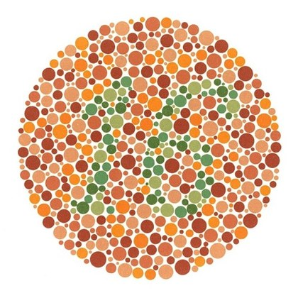
It’s a joke, but it makes a fair final point: a figure that looks perfectly obvious to you might not be obvious to someone else. So use perceptually uniform colourmaps when the numbers matter, make your figures accessible, and don’t be afraid to break the rules when you have a good reason.
And please, fix your defaults.
Image credits
- Randall Munroe, Color Survey Results (2010) and Combination Vision Test (2013), xkcd, CC BY-NC 2.5.
- D. L. MacAdam (1942), Visual sensitivities to color differences in daylight, JOSA 32, 247. DOI. Diagram: Wikimedia Commons.
- E. van der Velden (2020), CMasher, JOSS 5, 2004. DOI.
- Colour-blindness simulations: Coblis.
- Colourmap diagnostics: viscm, N. J. Smith and S. van der Walt.
- Portrait: NASA astronaut Eileen Collins, public domain, as distributed with scikit-image.
- Ozone figures: S. Davis (NOAA), via the data.europa.eu Data Visualisation Guide.
- Ishihara colour-vision plate: S. Ishihara (1917), public domain.
- All other figures are my own.
Additional references: E. Hering (1878), Zur Lehre vom Lichtsinne; L. M. Hurvich and D. Jameson (1957), Psychological Review 64, 384.